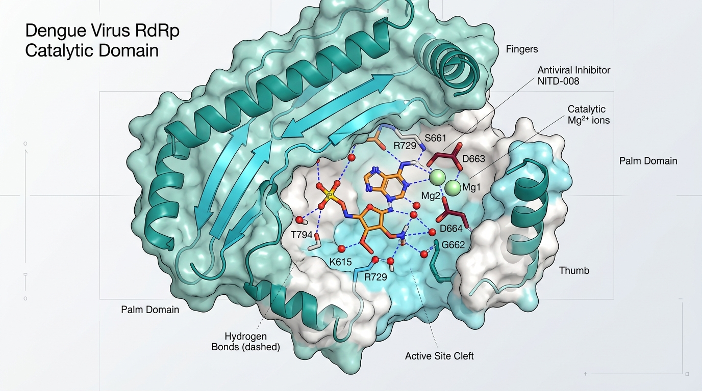

Structure-Based Drug Discovery • Antiviral Therapeutics
AI-Driven Discovery of Novel RdRp Inhibitors for Dengue Virus
Scientific Challenge
Dengue virus remains a major global health threat with limited antiviral treatment options. RNA-dependent RNA polymerase (RdRp) is a highly conserved enzyme essential for viral replication and represents a prime therapeutic target.
Computational Contribution
- Target Structure Characterization: High-resolution modeling of the RdRp catalytic pocket and allosteric sites.
- High-Throughput Virtual Screening: Screening extensive chemical libraries coupled with RDKit chemical similarity searches.
- Molecular Dynamics & MM/GBSA: 100ns explicit-solvent simulations to evaluate trajectory stability and calculate binding free energies.
Key Scientific Findings
- Prioritized promising lead compounds from multi-million chemical libraries.
- Demonstrated that interaction stability and binding energetics (MM/GBSA) are more reliable indicators of antiviral potential than docking scores alone.
- Identified promising lead scaffolds for further experimental optimization.
- Computationally prioritized candidates were subsequently selected for enzymatic validation through collaborative research.
Scientific Significance:
Demonstrates how combining virtual screening and molecular dynamics energetics drastically reduces false positives in antiviral discovery.
